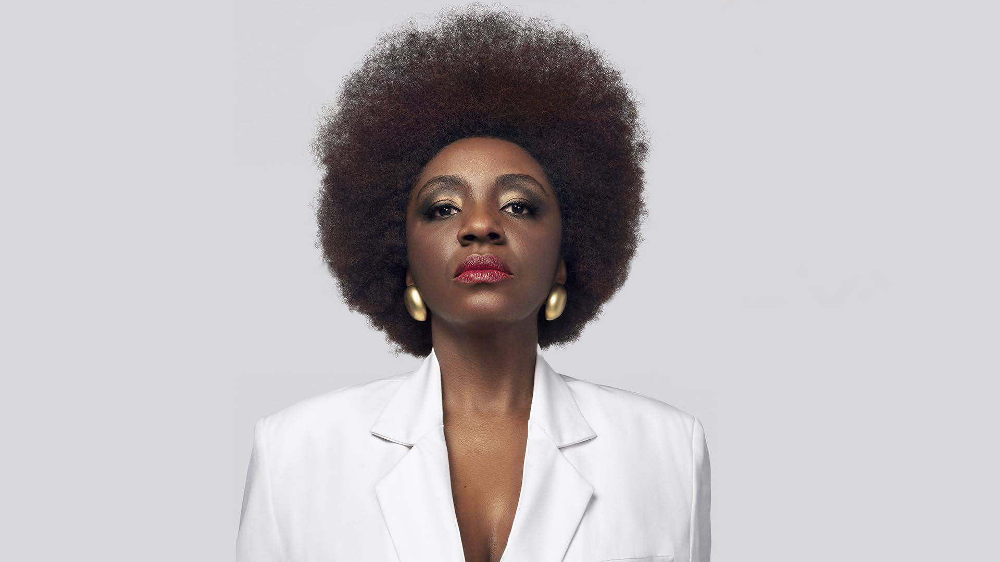

Executiva em Tecnologia há mais de 20 anos, Especialista em Gestão de Negócios e Transformação Digital com atuação internacional. CEO e uma das fundadoras do Movimento Black Money e D, Black Bank, Nina é Empresária, Conselheira Administrativa e Consultiva, Colunista MIT Sloan Review Brasil e Exame, Conselheira do Conselho Superior Feminino da FIESP, além de lnfluencer Linkedln e SAP lnfluencer Market. Foi considerada a Mulher Mais Disruptiva do Mundo pela Women ln Tech Global Awards 2021; uma das 19 Mulheres de 2019, pela UOL Universal; uma das 20 Mulheres Mais Poderosas do Brasil pela Forbes; uma das 100 afrodescendentes mais influentes do mundo abaixo de 40 anos pela MIPAD (Most lnfluential People of African Descent). Entre outras premiações como: Profissional Digital de 2021 pela Abradi.
NINA SILVA
CEO do Movimento Black Money e D'Black Bank. Uma das 100 pessoas afrodecendentes mais influentes do mundo abaixo dos 40 anos de acordo com a Forbes.
História
Nascida e criada em São Gonçalo (RJ), no bairro Jardim Santa Catarina, que já foi considerada a maior favela plana da América Latina, formou-se em administração pela Universidade Federal Fluminense e fez pós-graduação na área de sistema de informação e gestão de projetos, com diversas certificações internacionais.
Carreira
Nina teve seu primeiro contato com tecnologia no segundo ano da faculdade, em seu primeiro emprego. Ela foi convidada a integrar o time da empresa que trabalhava com o sistema ERP da SAP. A partir de então, aprofundou seus estudos, tirou a sua certificação e trilhou seu caminho dentro da tecnologia. Além da tecnologia, Nina também também é palestrante e escritora. Como palestrante, já esteve presente em eventos como Social Good Brasil, Social Media Week e Campus Party Brasil. Também já foi jurada em Hackatons e Staturp Weekends. Como escritora, teve seu livro "InCorPoros - Nuances de Libido", que envolve literatura de raça e erotismo, lançado em 2018 no Centro Cultural Olido em São Paulo. Atualmente é formada em Administração, gerente de projetos na ThoughtWorks, executiva de Tecnologia e responsável pelo Movimento Black Money.
Movimento Black Money
Nina Silva é uma das fundadoras do Movimento Black Money (MBM). O MBM tem por objetivo desenvolver o ecossistema afroempreendedor e assim estimular a inovação entre empreendedores e jovens negros. O Movimento busca criar e fortalecer uma rede que permita que pelo menos 30% do dinheiro gasto por pessoas negras circule dentro da comunidade ou vá para empresas de fato comprometidas com a inclusão racial.Para tanto, investe no letramento identitário e do mindset de inovação do ecossistema afroempreendedor e em comunicação, educação, novas mídias e networking. Atualmente, um de seus principais frutos é a fintech D'Black Bank que visa fornecer crédito para empreendedores negros.
Confira as palavras inspiradoras da Nina Silva: